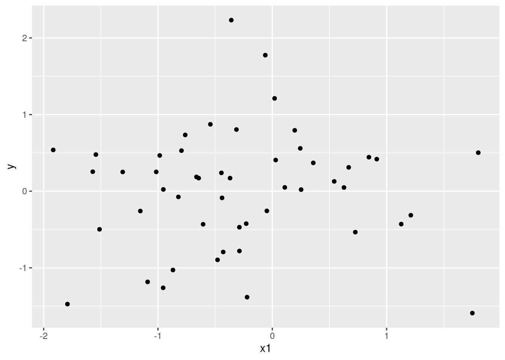

2. Programming with R
Before diving into specific R techniques about managing social science research, this chapter will cover some general programming concepts that will help you make your R code more reusable. These techniques help you move away from the specifics of your data, and make generalizable solutions that you can then reapply to other data sets. This also prevents mistakes, where you copy-paste code and fail to make the necessary changes. But perhaps most importantly, it saves you time: these concepts allow you to do a lot of work with just a few simple building blocks of code.
This chapter will cover ways to iterate code
(using either loops or the map() function),
functions (which will let you easily reuse code snippets you often need),
and making code more reusable with the box package.
Loops
Loops are a fundamental programming concept that allow you to repeat code multiple times without duplicating it. In R, a loop has the following structure:
## [1] 1
## [1] 2
## [1] 3
## [1] 4This consists of two parts:
- The
forstatement, which tells R to start a loop. - The code block within the curly braces
{}that contains the code to be repeated.
The for statement should be read as: “for each element in the sequence 1 to 4,
assign that element to the variable i, and then run the code block”.
Therefore, this code is equivalent to:
## [1] 1
## [1] 2
## [1] 3
## [1] 4But it’s much easier to maintain! Imagine having to do 86 iterations: you would need to copy paste the code 85 times every time you want to update something. Using loops, you don’t need to copy-paste a thing, leading to fewer errors.
While loops can be a perfectly fine way of doing repeated work, most R
programmers prefer not to use loops, but instead use functions such as
lapply() and map().
However, for this you will need to know how to write functions.
Functions
Basic Functions
A function is an R object that’s essentially a shortcut to run a bit of code.
Usually, a function takes an argument (the input), and returns an output. The
argument is always provided within parentheses. The sqrt() function, for
example, takes a number as its argument and returns the square root of that number.
## [1] 2The beauty of functions is that they allow you to define a set of operations in one place, and re-use it as often as you want. If you then need to update the operations, all you need to do is update the function, instead of hunting down every instance of the operations throughout your script.
Let’s say I have a report, where I run the same model many times, each time with different variables:
library(tidyverse)
df <- tibble(y = rnorm(50),x1 = rnorm(50),x2 = rnorm(50), x3 = rnorm(50))
# lots of code in between...
lm(y ~ x1, data = df)
# lots of code in between...
lm(y ~ x2, data = df)
# lots of code in between...
lm(y ~ x3, data = df)
# lots of code in between...
lm(y ~ x1 + x2 + x3 , data = df)##
## Call:
## lm(formula = y ~ x1, data = df)
##
## Coefficients:
## (Intercept) x1
## 0.03265 0.03967
##
##
## Call:
## lm(formula = y ~ x2, data = df)
##
## Coefficients:
## (Intercept) x2
## 0.01231 -0.09216
##
##
## Call:
## lm(formula = y ~ x3, data = df)
##
## Coefficients:
## (Intercept) x3
## 0.021026 0.007116
##
##
## Call:
## lm(formula = y ~ x1 + x2 + x3, data = df)
##
## Coefficients:
## (Intercept) x1 x2 x3
## 0.025104 0.046257 -0.095309 -0.001579If I now want to slightly change the model (e.g. use robust standard errors), I would have to find the places the model is used, and change it each time. Instead, I can put the model code in a function:
my_model <- function(independent_variable){
results <- lm(formula = reformulate(independent_variable, response = "y"), data = df)
return(results)
}This has the following structure:
- The function statement tells R to create a function.
It also list the arguments the function takes.
In this case just one: independent_variable,
which should be passed a string (that reformulate() can convert to a formula).
- The code block within the curly braces {} contains the code that will be run
when the function is called. It ends with the return() function,
which tells R what to return as output of the function.
This will be printed to to the console, or can be assigned to an object.
I can then run my model four times:
my_model("x1")
# lots of code in between...
my_model("x2")
# lots of code in between...
my_model("x3")
# lots of code in between...
my_model(c("x1","x2","x3"))##
## Call:
## lm(formula = reformulate(independent_variable, response = "y"),
## data = df)
##
## Coefficients:
## (Intercept) x1
## 0.03265 0.03967
##
##
## Call:
## lm(formula = reformulate(independent_variable, response = "y"),
## data = df)
##
## Coefficients:
## (Intercept) x2
## 0.01231 -0.09216
##
##
## Call:
## lm(formula = reformulate(independent_variable, response = "y"),
## data = df)
##
## Coefficients:
## (Intercept) x3
## 0.021026 0.007116
##
##
## Call:
## lm(formula = reformulate(independent_variable, response = "y"),
## data = df)
##
## Coefficients:
## (Intercept) x1 x2 x3
## 0.025104 0.046257 -0.095309 -0.001579I don’t need to touch these anymore if I want to change something in the model. I only need to update the function definition.
Note that any variables we created in the function are kept within the function, and you can’t access them later:
## Error: object 'results' not foundThis keeps your working environment nice and clean, which again prevents problems.
Above I used the return function. That was purely to to make it explicit what the output is for explanation purposes, it is not actually needed. Anything on the last line of the function that would normally be returned to the console, is used a return value of the function:
my_model <- function(independent_variable){
lm(formula = reformulate(independent_variable, response = "y"), data = df)
}
my_model("x1")##
## Call:
## lm(formula = reformulate(independent_variable, response = "y"),
## data = df)
##
## Coefficients:
## (Intercept) x1
## 0.03265 0.03967Functions and the tidyverse
Tidyverse can be a bit tricky when writing functions, because the unquoted variable names often break stuff.
Let’s say I want to have standard scatter plots like this:

But I don’t want to copy all that, so I make a function:
my_plot <- function(x_variable){
df %>%
ggplot(aes(y = y, x = x_variable)) +
geom_point()
}
my_plot(x1)## Error in `geom_point()`:
## ! Problem while computing aesthetics.
## ℹ Error occurred in the 1st layer.
## Caused by error:
## ! object 'x1' not foundWhy can’t it find x1? It’s right there in the data frame!
But when evaluating my_plot(x1), R doesn’t look for x1 in the dataframe
(why would it?),
it looks for x1 in the global environment.
So we have to make sure R waits until it’s inside ggplot() to look for x1 in the data frame.
This is actually quite easy to do,
simply wrap the variable name in {{ }} in the function body:
my_plot <- function(x_variable){
df %>%
ggplot(aes(y = y, x = {{ x_variable }})) +
geom_point()
}
my_plot(x1)
However easy that solution was, the explanation behind it is a bit more complex,
see here.
If that’s all black magic to you,
just remember that if you want to use unquoted variable names
in your functions, wrap them in {{ }} in the function body.
Map()
map() works just like loop, but generally faster. It takes two arguments:
- An iterable object, like a vector or list
- A function
It will then apply the function to each element of the object. It will return a list with the results of each iteration.
For example, to get the the square root for each of the numbers in a vector:
## [[1]]
## [1] 2
##
## [[2]]
## [1] 3
##
## [[3]]
## [1] 4You may not quite like the fact that map returns a list, but quite a few things in
R use lists. modelsummary() for example.
Suppose I want to put all the results from my_model() above in a nice table.
Suppose I want to regress the same y on
a number of combinations of independent variables, I can put the combination of
variables in a list, and then run my model for each element of the list.
library(modelsummary)
# define a list of models:
# the left-hand sides are the labels
# the right-hand sides the independent variables I will pass to reformulate.
models <-
list("X1 only" = "x1",
"X2 only" = "x2",
"X3 only" = "x3",
"Full" = c("x1", "x2", "x3"))
# map() works nicely in dplyr pipe!
models %>%
map(my_model) %>%
modelsummary(output = "flextable")
| X1 only | X2 only | X3 only | Full |
|---|---|---|---|---|
(Intercept) | 0.033 | 0.012 | 0.021 | 0.025 |
(0.116) | (0.110) | (0.110) | (0.119) | |
x1 | 0.040 | 0.046 | ||
(0.129) | (0.133) | |||
x2 | -0.092 | -0.095 | ||
(0.129) | (0.132) | |||
x3 | 0.007 | -0.002 | ||
(0.115) | (0.118) | |||
Num.Obs. | 50 | 50 | 50 | 50 |
R2 | 0.002 | 0.011 | 0.000 | 0.013 |
R2 Adj. | -0.019 | -0.010 | -0.021 | -0.051 |
AIC | 120.8 | 120.3 | 120.9 | 124.2 |
BIC | 126.5 | 126.1 | 126.6 | 133.8 |
Log.Lik. | -57.386 | -57.169 | -57.433 | -57.103 |
F | 0.094 | 0.512 | 0.004 | 0.205 |
RMSE | 0.76 | 0.76 | 0.76 | 0.76 |
If you want to specify more arguments to the function you are using in map(),
you can do so by using an anonymous function.
Let’s say I want to calculate the mean of a number of vectors, but I want to remove missing values.
vectors <- list(c(1,NA,3,-99,5),
c(10,20,-99,30,40,50),
c(-99,NA,200,300))
# the ~ creates a purrr-style anonymous function, where .x is current element of the list
vectors %>%
map(mean)## [[1]]
## [1] NA
##
## [[2]]
## [1] 8.5
##
## [[3]]
## [1] NAThat didn;t work, since mean doesn’t remove NAs by default. I can make a new function that does remove NAs by defaults:
## [[1]]
## [1] -22.5
##
## [[2]]
## [1] 8.5
##
## [[3]]
## [1] 133.6667Or, if I don’t want this new function cluttering up my environment, I can make an anonymous function on the fly:
## [[1]]
## [1] -22.5
##
## [[2]]
## [1] 8.5
##
## [[3]]
## [1] 133.6667Note it will be quite difficult to use map() with data frame columns to edit
multiple variables.
For this, use across(), as seen in the data cleaning chapter
Other variants of map()
map() is an entire family of functions.
One that I like is pmap(), which allows you to iterate over a number
of things at the same time.
Suppose, like before I want to run a model a few times, but now I want to not only change one thing (like the control), but more things, like the dependent variable.
First, I put the parameters of each specification in a data frame like this:
specs <-
tribble(
~label, ~depvar, ~controls,
"X1 only" ,"y", "x1",
"X2 only" ,"y", "x2",
"X3 only" , "y","x3",
"Full" ,"y", c("x1", "x2", "x3")
)I can print this in my markdown file, so it’s easily seen what I am doing:
library(flextable)
specs %>%
mutate(
controls = map_chr(controls, ~ paste(.x, collapse = ","))
) %>%
flextable()label | depvar | controls |
|---|---|---|
X1 only | y | x1 |
X2 only | y | x2 |
X3 only | y | x3 |
Full | y | x1,x2,x3 |
I used the map_chr() function to concatenate each cell in the controls column
using paste() and turn that into a vector of strings.
This vector can go straight into mutate, and in the dataframe.
Then I feed my spec into a function using pmap:
specs %>%
pmap(
function(depvar, controls, ... ){
lm(reformulate(controls, response = depvar), data =df)
}
) %>%
set_names(specs$label) %>%
modelsummary(output = "flextable", stars = TRUE)
| X1 only | X2 only | X3 only | Full |
|---|---|---|---|---|
(Intercept) | 0.033 | 0.012 | 0.021 | 0.025 |
(0.116) | (0.110) | (0.110) | (0.119) | |
x1 | 0.040 | 0.046 | ||
(0.129) | (0.133) | |||
x2 | -0.092 | -0.095 | ||
(0.129) | (0.132) | |||
x3 | 0.007 | -0.002 | ||
(0.115) | (0.118) | |||
Num.Obs. | 50 | 50 | 50 | 50 |
R2 | 0.002 | 0.011 | 0.000 | 0.013 |
R2 Adj. | -0.019 | -0.010 | -0.021 | -0.051 |
AIC | 120.8 | 120.3 | 120.9 | 124.2 |
BIC | 126.5 | 126.1 | 126.6 | 133.8 |
Log.Lik. | -57.386 | -57.169 | -57.433 | -57.103 |
F | 0.094 | 0.512 | 0.004 | 0.205 |
RMSE | 0.76 | 0.76 | 0.76 | 0.76 |
+ p < 0.1, * p < 0.05, ** p < 0.01, *** p < 0.001 | ||||
Notes:
- The column names of
specwill be passed to the function as arguments. - If
spechas columns that my function does not accept as arguments, it will throw an error. The...prevents this, as that captures all unused arguments.
This particular function uses only 2 arguments,
so map2() would have worked fine here as well,
but this can be more easily expanded to more complex things than map2().
Making functions re-usable with box
Now that you have a bunch of functions, it’s a good idea to make them re-usable across projects. The box package makes this easy.
You define your functions in a script, say box_modules/functions.R:
This is just a function that returns the proportion of missing values in a vector.
box::use(r/core[...]) loads all functions from the core package,
so you can use them in your function (box modules don’t load anything you don’t tell them to).
You can then use this function in any project loading the entire script:
This looks in the folder where your script is located for a folder called box_modules, and loads all functions in the functions.R script.
You can run the function by:
## [1] 0.25Box even allows you to load packages:
## # A tibble: 6 × 14
## name height mass hair_color skin_color eye_color birth_year sex gender
## <chr> <int> <dbl> <chr> <chr> <chr> <dbl> <chr> <chr>
## 1 C-3PO 167 75 <NA> gold yellow 112 none masculi…
## 2 R2-D2 96 32 <NA> white, blue red 33 none masculi…
## 3 R5-D4 97 32 <NA> white, red red NA none masculi…
## 4 IG-88 200 140 none metal red 15 none masculi…
## 5 R4-P17 96 NA none silver, red red, blue NA none feminine
## 6 BB8 NA NA none none black NA none masculi…
## # ℹ 5 more variables: homeworld <chr>, species <chr>, films <list>,
## # vehicles <list>, starships <list>In fact, when writing your own box modules,
this is the only way to load packages (hence thr box::use(r/core[...] in the function above).
Note that you have to use the $ operator to access functions and data
from the package or module you loaded.
If you dont want that you can also attach specific functions:
## # A tibble: 6 × 14
## name height mass hair_color skin_color eye_color birth_year sex gender
## <chr> <int> <dbl> <chr> <chr> <chr> <dbl> <chr> <chr>
## 1 C-3PO 167 75 <NA> gold yellow 112 none masculi…
## 2 R2-D2 96 32 <NA> white, blue red 33 none masculi…
## 3 R5-D4 97 32 <NA> white, red red NA none masculi…
## 4 IG-88 200 140 none metal red 15 none masculi…
## 5 R4-P17 96 NA none silver, red red, blue NA none feminine
## 6 BB8 NA NA none none black NA none masculi…
## # ℹ 5 more variables: homeworld <chr>, species <chr>, films <list>,
## # vehicles <list>, starships <list>Or just attach everything just like you would with library():
## # A tibble: 6 × 14
## name height mass hair_color skin_color eye_color birth_year sex gender
## <chr> <int> <dbl> <chr> <chr> <chr> <dbl> <chr> <chr>
## 1 C-3PO 167 75 <NA> gold yellow 112 none masculi…
## 2 R2-D2 96 32 <NA> white, blue red 33 none masculi…
## 3 R5-D4 97 32 <NA> white, red red NA none masculi…
## 4 IG-88 200 140 none metal red 15 none masculi…
## 5 R4-P17 96 NA none silver, red red, blue NA none feminine
## 6 BB8 NA NA none none black NA none masculi…
## # ℹ 5 more variables: homeworld <chr>, species <chr>, films <list>,
## # vehicles <list>, starships <list>Alright, let’s unload our own function, so we can load it in another way, using:
Alternatively, you can specify a search path,
where box will look for modules.
I will put my box modules in C:/Users/koen/documents/box_modules.
The following code will allow box to look in that folder for modules:
Note that I have used the parent folder of box_modules,
because for whatever reason you have to do that
(the .R files need to be in a subfolder).
By adding this to your [.Rprofile](https://docs.posit.co/ide/user/ide/guide/environments/r/managing-r.html) file,
it will be run any time you open R.
Now I can just use the following code in any project to access my functions:
## [1] 0.3333333Of course you are no longer working project-oriented: your box modules aren’t in your project folder!
If you want to use box modules within your project folder, best to add the root folder as search path:
The function getOption('box.path') gets your current box search path,
and c() combines it with your project root folder returned by here().
One way I like to organize my box modules is to have them in a git repository and use it as a submodule in my projects. That way you can have a specific version or branch of all your box modules in every project. You can also merge changes you make to you box modules of one project, back to all your other active projects. It’s fantastic, but a bit finnicky to set up.